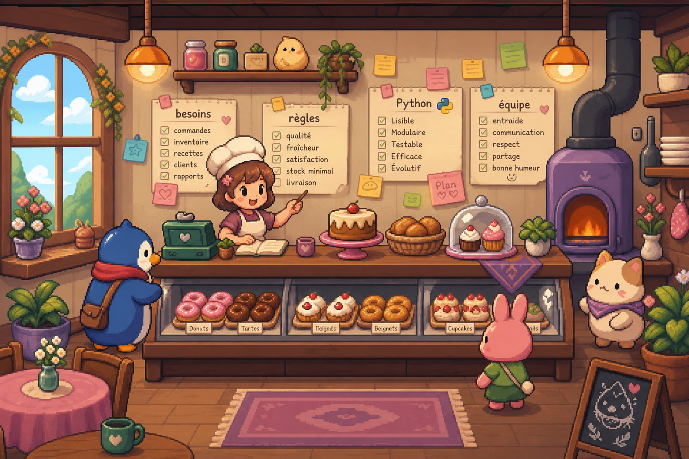
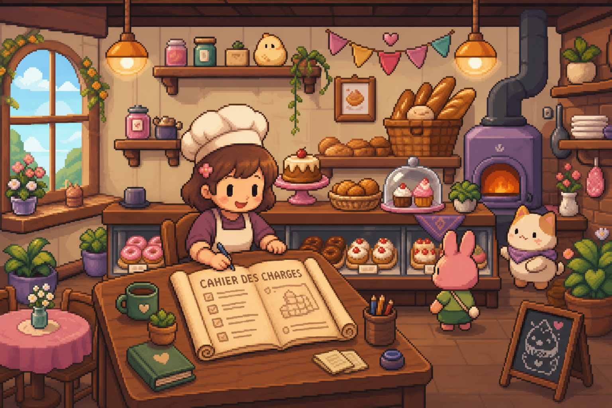
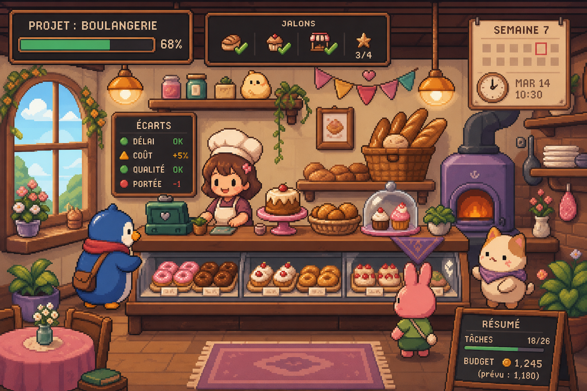

Python · Jeu vidéo · Projet collaboratif
Bakery Clicker
Développement du jeu The Bakery en Python : organisation des fichiers du jeu et apprentissage Python orienté jeu vidéo.
01 — Collaboration
Un jeu développé en duo
Ce projet a été développé en duo avec Baptiste, un collaborateur à l’école Vidal. Nous avons construit ensemble The Bakery en Python, en nous répartissant les tâches de manière collaborative.
Le code a été versionné sur GitHub pour suivre les évolutions du jeu et travailler proprement à deux sur la même base.

02 — Technique
Organisation du jeu
Nous avons organisé les fichiers du jeu pour séparer clairement logique, ressources et données, ce qui a rendu le projet plus simple à maintenir et à faire évoluer.
La persistance a été gérée via des fichiers JSON, afin de sauvegarder les données nécessaires au fonctionnement du jeu.

03 — Apprentissages
Ce que le projet m’a apporté
Ce projet m’a permis de progresser en Python orienté jeu vidéo, en travaillant sur la logique d’un jeu complet, la persistance JSON et l’organisation d’un développement collaboratif.
- Organisation Fichiers du jeu structurés pour garder un code lisible et maintenable.
- Python jeu vidéo Montée en compétences sur le développement d’un jeu desktop en Python.
- Collaboration Versioning GitHub et travail en duo sur un projet commun.

04 — Réalisation
Jeu Python développé en collaboration, avec persistance JSON et versioning GitHub.